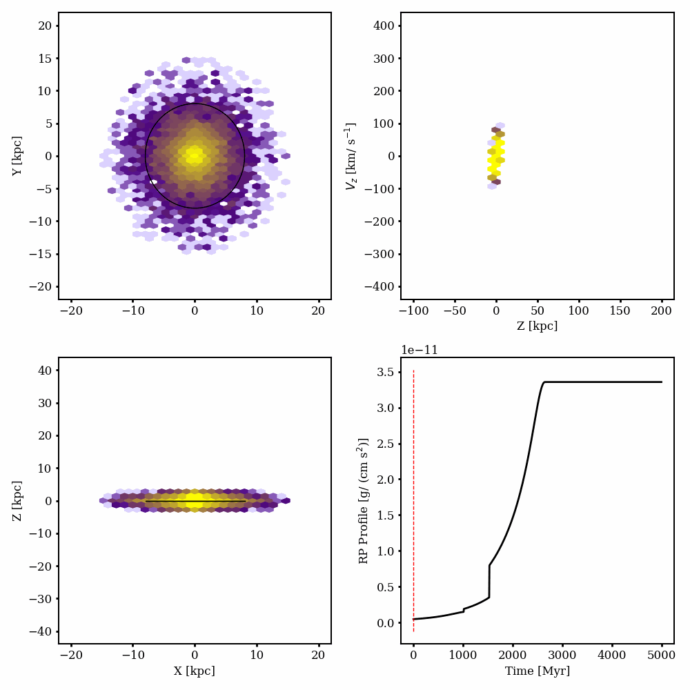

Ram Pressure Shadowing shadows#
When a wind slams into a galaxy disk and strips gaseous material, it doesn’t uniformly pass through the disk. Therefore,
material along the wind direction beyond the disk will be “shielded” to some degree from the wind. This shiedling,
which is modelled in GalaRP with the ShadowBase class and associated subclasses, tries to capture this by
limiting the ram pressure strength evaluated at various physical positions.
GalaRP has a large suite of built-in shadow classes for the user to try, which range from shadow strengths that are
uniform across the shadowed region, to exponential drop-offs, to a shadow that loses strength the higher one goes above
the disk. It is also easy for the user to define their own subclasses using the ShadowBase class.
Basic Example#
The easiest way to create a shadow is to initialize it using a wind. For example, we will define a simple uniform shadow that is then set up to coincide with a 45 degree Lorentzian wind.
import galarp as grp
wind = grp.LorentzianWind(t0=500 * u.Myr, width=400 * u.Myr, units=galactic)
wind.init_from_inc(inclination=np.deg2rad(40), strength = 500 * u.km / u.s)
shadow = grp.UniformShadow()
shadow.init_from_wind(wind)
You pass this into a GalaRP sim as follows:
sim = grp.RPSim(shadow=shadow)
Dynamic Shadow Based on Stripping Radius#
The shadow’s size should realistically change based on the size of the active disk. For example, a gas disk that started with a 10kpc radius shouldn’t still have a 10kpc shadow when the remaining gas disk after stripping is only 2kpc in radius.
This is handled in GalaRP using the dynamic keyword in the ShadowBase class. Setting this keyword to True
will have the shadow, at each evaluation, determine the stripping radius of the disk on the fly using
grp.calculate_rstrip(...) and will set the disk radius of the shadow accordingly.
shadow = grp.UniformShadow(dynamic=True)
shadow.init_from_wind(wind)
You can see this in action in the following plot, where there stripping radius is shown as a black circle that evolves to shrink as the disk is stripped.
User-Defined shadows#
To define a shadow, simply call the ShadowBase class as the parent class. The user will need to define the
evaluate method, which determines the shadow strength at a time t for a set of positions q. It should be
noted that the shadow’s evaluate function should return values between 0 and 1, where 0 represents complete shadowing
(i.e. the ram pressure acceleration is reduced to 0) and 1 represents no shadowing. In the RPSim class, it is
literally a multiple applied to each particle’s calculated ram pressure acceleration.
For an example, this is a an example class for a uniform wind that also has a dropoff based on height above the disk.
class UniformExponentialZVariableShadow(grp.ShadowBase):
def __init__(self, damping=0.5, R_disk=10, zmin=0.5, phi=np.deg2rad(20), z_dropoff=10, **kwargs ):
super().__init__(damping=damping, R_disk=R_disk, shadow_name="Uniform", **kwargs)
if isinstance(zmin, u.Quantity):
zmin = zmin.to(u.kpc).value
self.zmin = zmin
self.phi = phi
self.z_dropoff = z_dropoff
self.frac = kwargs.get("frac", 0.9)
self.Rmax = kwargs.get("Rmax", 20)
self.zmax = kwargs.get("zmax", 2)
self.debug = kwargs.get("debug", False)
self.Rdisks = []
def evaluate(self, q, t):
x, y, z = q.T
if self.dynamic_shadow:
self.R_disk = grp.calculate_rstrip(q.T, frac=self.frac, rmax=self.Rmax, zmax=self.zmax)
if self.debug:
self.Rdisks.append(self.R_disk)
cent = _shadow_tangent(z, self.phi)
dist = np.sqrt((x - cent) ** 2 + y**2)
out = np.ones(dist.shape)
in_disk = np.logical_and((z > self.zmin), (dist < self.R_disk))
out[in_disk] = self.damping + (1 - np.exp(-z[in_disk] / self.z_dropoff))
return out